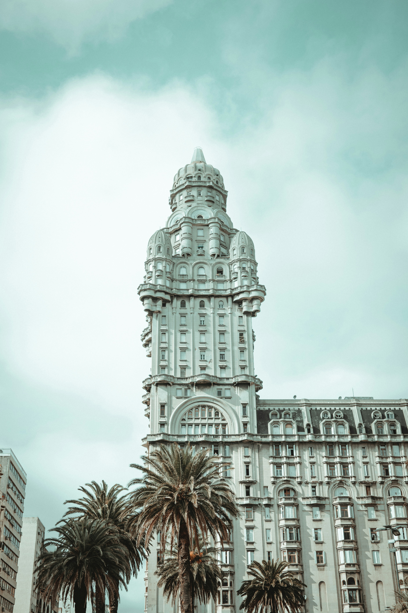
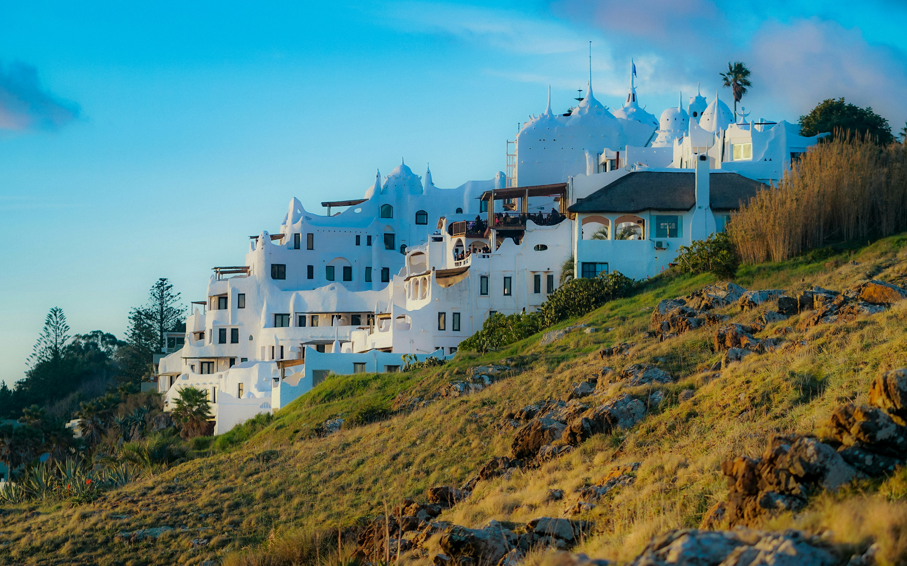
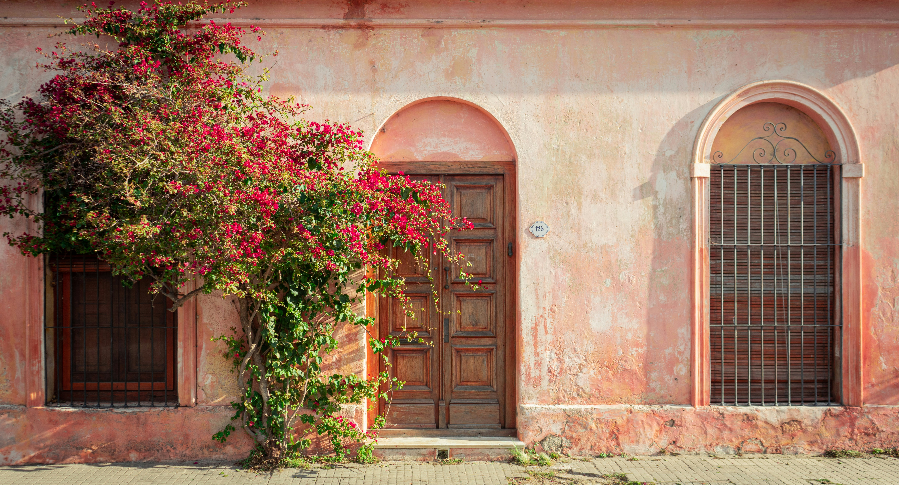
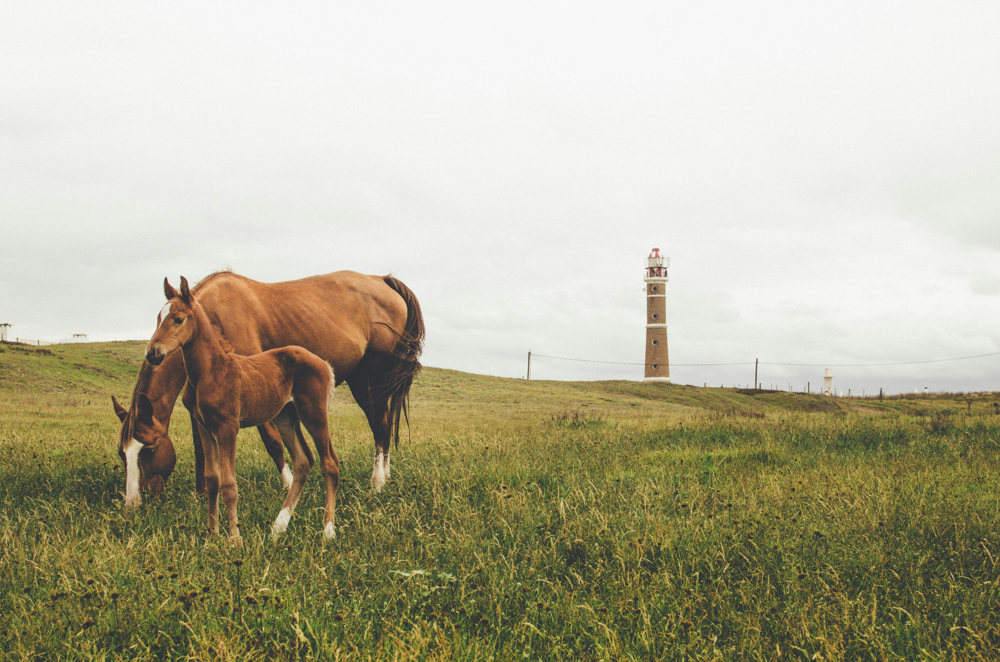
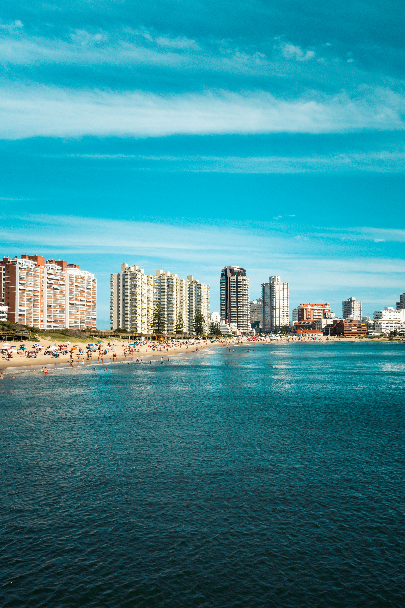
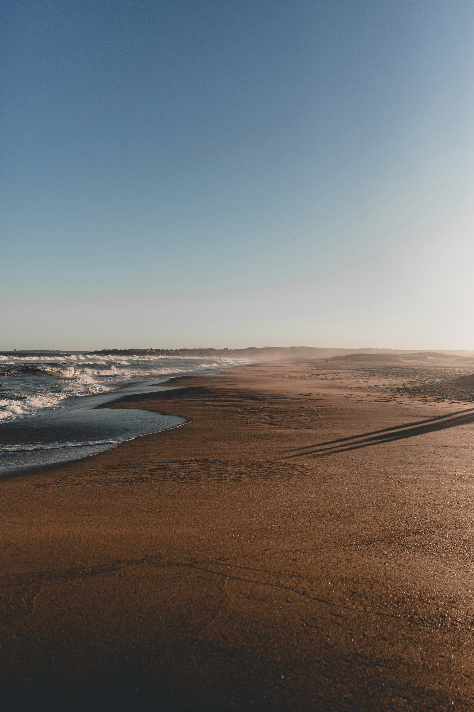
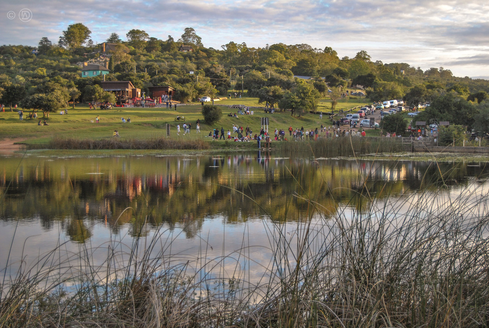

Nestled between giants Argentina and Brazil, Uruguay is often celebrated as a pocket of tranquility and progressive stability in South America. Its landscape is defined by the pampas—gentle, rolling green plains dotted with cattle—and a stunning Atlantic coastline that ranges from the cosmopolitan glamour of Punta del Este to the wild, rustic dunes of Rocha. The capital, Montevideo, anchors the nation with its eclectic architecture and the famous Rambla, a continuous waterfront promenade that serves as the city's communal living room. Culturally, the air is frequently filled with the scent of wood-fired asado (barbecue) and the Afro-Uruguayan rhythm of candombe drums, while locals are rarely seen without a thermos and gourd of mate in hand, symbolizing a society that deeply values social connection, democracy, and a refreshingly laid-back pace of life.

Montevideo, the capital city of the country. And here comes some more sarasa to test what happens when the text is longer than the container. the card is long so I'll have to add more and more sarasa. Eastern people, the country or the tomb, freedom or dying with glory. It's the claim the soul pronounces and which we will know how to heroically accomplish. Freedom in the battle, we'll yell, and dying, we'll say again.

Casapueblo, a famous building and museum near Punta del Este.

Colonia del Sacramento, a historic city known for its colonial architecture.

Cabo Polonio, a remote village famous for its sand dunes and sea lions.

Punta del Este, a popular beach resort city known for its vibrant nightlife.

Barra de Valizas, a laid-back beach town with stunning coastal views.

Villa Serrana, a picturesque village nestled in the hills, perfect for nature lovers.